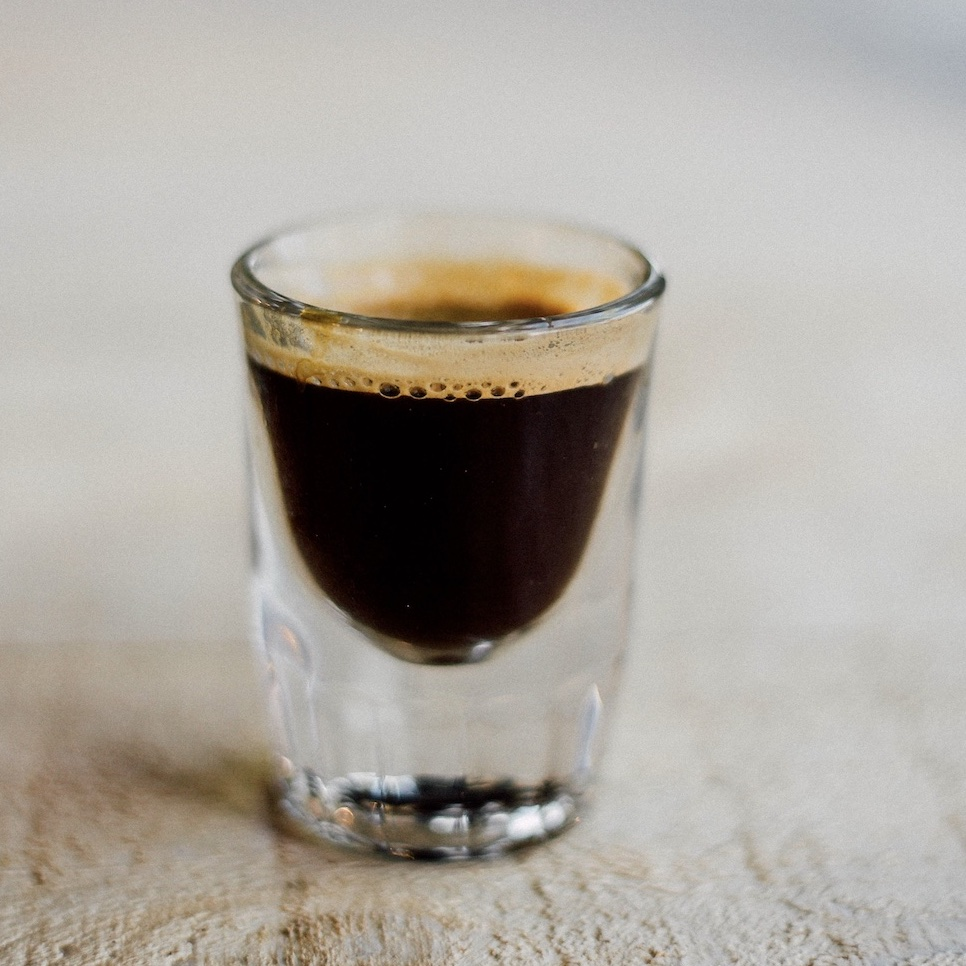
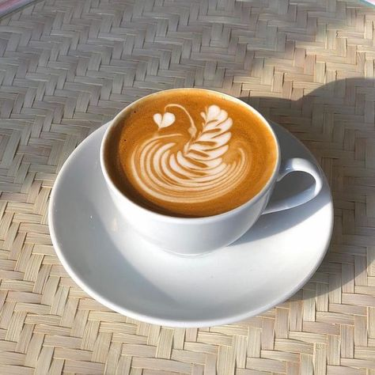
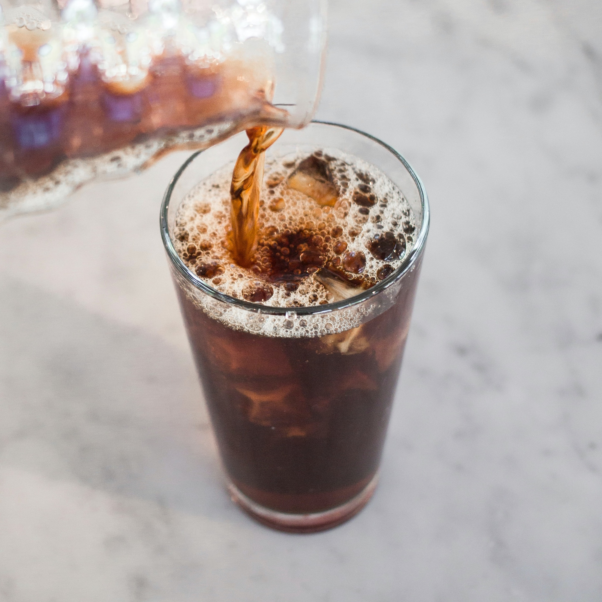

Drip Coffee
Drip coffee, also known as filtered or brewed coffee, is a widely enjoyed method of coffee preparation. It involves pouring hot water over coarsely ground coffee beans and allowing it to pass through a filter into a carafe or pot. This method utilizes gravity to extract the flavors and oils from the coffee grounds, resulting in a flavorful and aromatic cup of coffee. Drip coffee is often brewed in coffee makers or manual pour-over setups, where water is poured evenly over the coffee grounds. Drip coffee is typically enjoyed black, but it can be customized with milk, cream, or sweeteners according to personal preference.
Espresso
A concentrated shot of coffee made by forcing hot water under high pressure through finely ground coffee beans. It is the foundation of many coffee drinks and has a rich, full-bodied flavor. Espresso is typically served in small, demitasse cups and enjoyed on its own or as a base for various beverages such as lattes, cappuccinos, and americanos. The brewing process extracts the coffee's intense flavors, oils, and caffeine, resulting in a robust and concentrated shot that serves as the building block for many coffee creations.
Americano
Simple yet popular coffee drink made by diluting a shot of espresso with hot water. This method creates a beverage similar in strength to drip brewed coffee but with a distinct flavor profile. The hot water adds volume to the espresso, resulting in a milder taste compared to a straight shot of espresso. Americanos can be enjoyed black or customized with milk, cream, or sweeteners to suit personal preference. It is a versatile option for those who prefer a less intense coffee experience or enjoy the convenience of espresso-based beverages.
Cappuccino
Cappuccino is a classic Italian coffee beverage that consists of equal parts espresso, steamed milk, and milk foam. It is traditionally served in a small, porcelain cup. The espresso provides a strong and robust base, while the steamed milk adds a creamy texture and slightly sweetens the drink. The milk foam topping, often created by aerating the milk, contributes to the cappuccino's characteristic presentation. The balance between espresso, steamed milk, and foam creates a harmonious combination of flavors and textures in each sip.
Latte
The typical espresso-to-milk ratio for a latte is approximately 1:3 or 1:4. This means that for every shot of espresso (about 1 ounce), you would use around 3 to 4 ounces of steamed milk. The milk is often textured to create microfoam, resulting in a velvety mouthfeel. Lattes are often enjoyed with latte art, where baristas skillfully pour steamed milk into the espresso to create beautiful designs on the surface.
Cold Brew
Cold brew coffee is a popular method of coffee preparation that involves steeping coarse coffee grounds in cold water for an extended period, usually 12 to 24 hours. The slow extraction process produces a smooth and less acidic coffee concentrate. The resulting cold brew is typically diluted with water or served over ice and can be customized with milk, cream, or sweeteners according to personal preference. Cold brew coffee is favored for its mellow flavor, lower acidity levels, and refreshing qualities, making it a popular choice, especially during hot weather.